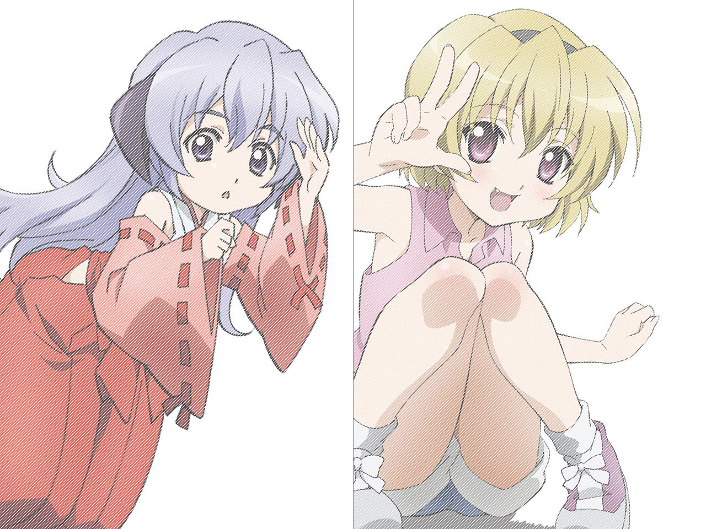
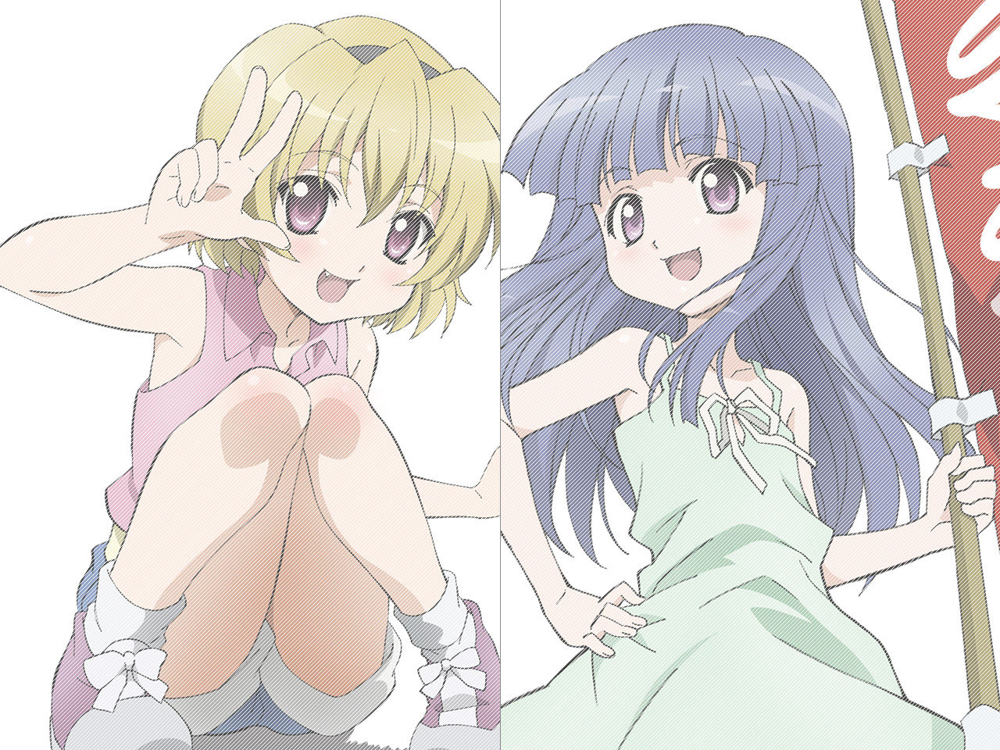
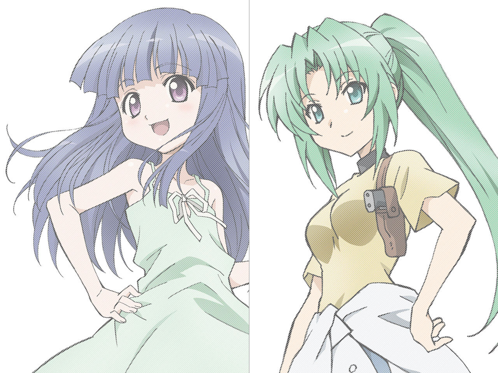
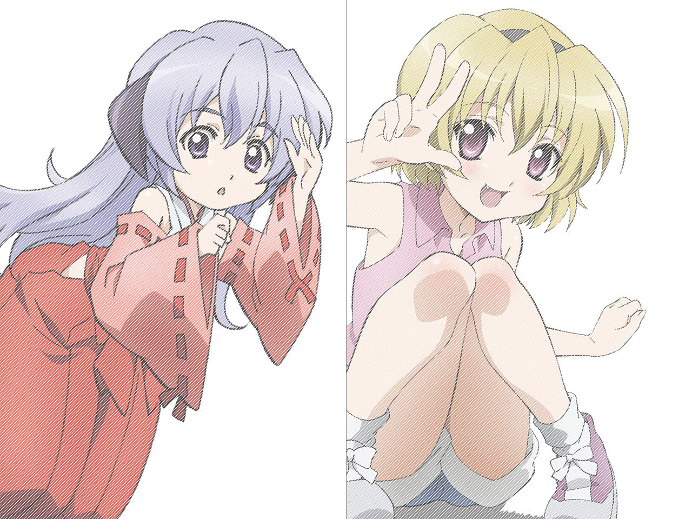
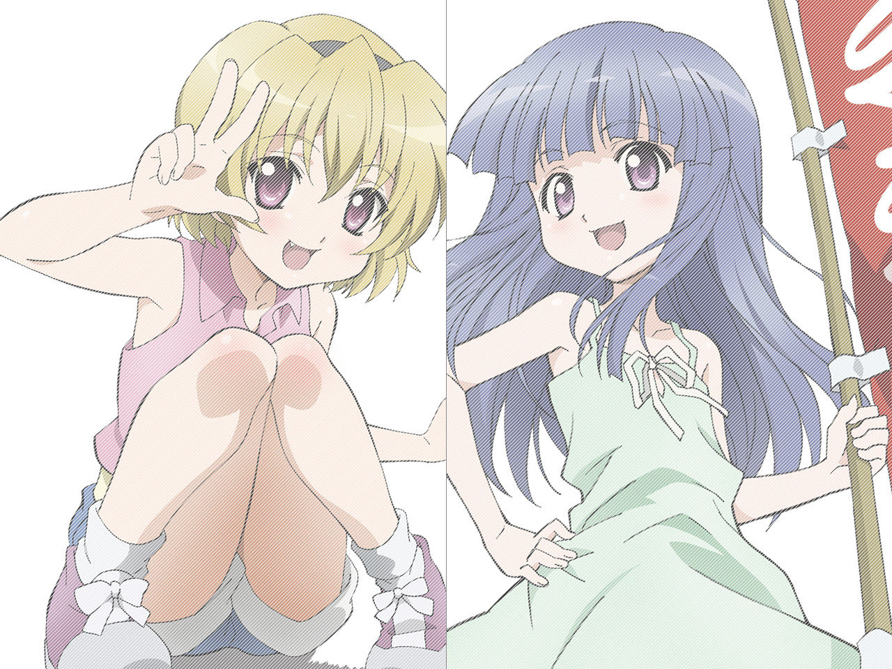
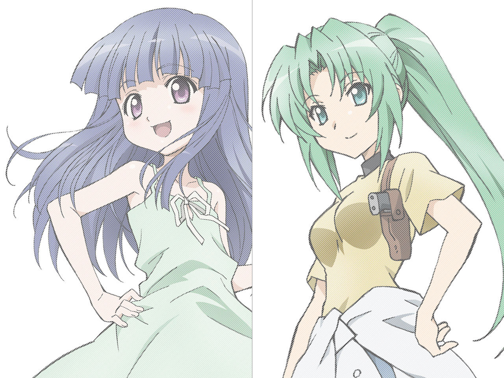


- 12.01.05 file.04最新場面写を紹介
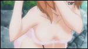
- 11.11.29 「オヤシロリカ」M.M.Dモデルフリー配布！
-
「100%マジカルスター☆」のスペシャル版PVに使用された
M.M.Dモデル・オヤシロリカVer.をフリー配布いたします！
3DCGムービー製作ツール「MikuMikuDance」で使用すれば、オヤシロリカをあなたの思うがままに操ることができるよ☆彡
【ダウンロード】
■FWサーバー ■ATVサーバー
※配布はフリーですが当データの権利は「ひぐらしのなく頃に煌製作委員会」が保有しております。
※サポート等は一切ご対応できません。
※詳細は添付されている「readme.txt」をご参照下さい。
- 11.11.24 『マンガでわかるひぐらし煌』＜第九回＞
-

- 11.11.23 『マンガでわかるひぐらし煌』＜第八回＞
-

- 11.11.22 『マンガでわかるひぐらし煌』＜第七回＞
- 11.11.21 『マンガでわかるひぐらし煌』＜第六回＞
-

- 11.10.17 file.03最新場面写を紹介
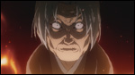 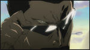
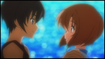
- 11.10.07 『マンガでわかるひぐらし煌』＜第五回＞
- 11.09.29 『マンガでわかるひぐらし煌』＜第四回＞
- 11.09.13 『マンガでわかるひぐらし煌』＜第三回＞
- 11.08.03 『マンガでわかるひぐらし煌』＜番外編＞
- 11.07.20 『マンガでわかるひぐらし煌』＜第二回＞
- 11.07.13 『マンガでわかるひぐらし煌』＜第一回＞
-

- 11.06.14 『ひぐらし解』ニコ生一挙上映無事終了！
-
去る、6月11・12日に渡って行われたニコニコアニメスペシャル「ひぐらしのなく頃に解」二夜連続放送が大盛況の内に終了いたしました。
6月11日には豪華ゲストをお呼びした生特番も一緒に放送したのですが、一挙上映と生特番の組み合わせはニコニコ生放送さんでも初の試みとなりました。
第一部には大石蔵人役の茶風林さんと鷹野三四役の伊藤美紀さんをお呼びして、ネタバレ限界のトークを繰り広げられました☆彡
第二部には竜宮レナ役の中原麻衣さん、北条悟史役の小林ゆうさんに加え、コスプレファイター長島☆自演乙☆雄一郎さんに緊急参戦していただきました！ 「ひぐらし」大好きの自演乙さんの熱い語りや中原さんの生「嘘だっ！」、そして小林さんの鳥のモノマネなどなど大盛り上がりの生放送でした。おかげさまで2日間合計で来場者・約91万人、約222万コメントを達成いたしました。
また12日本編終了後に放送された、組曲「ひぐらしのなく頃に」にも多数の方にお越しいただきまして、誠にありがとうございました☆彡
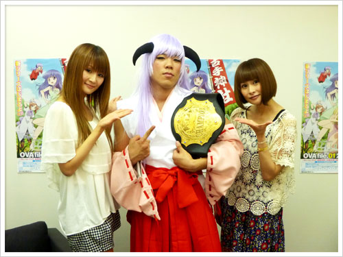
羽入コスの長島☆自演乙☆雄一郎さんと中原さん、小林さん
- 11.05.30 file.01最新の場面写真が到着☆彡
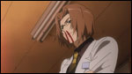 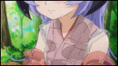